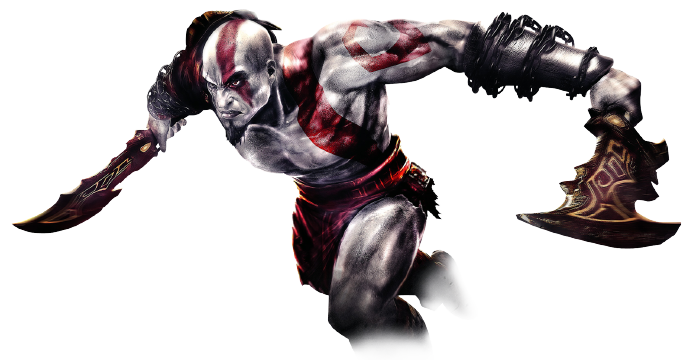

God of War II is a hack-and-slash action-adventure video game and the sequel to the God of War video game for the PlayStation 2. It was released in North America on March 13, 2007, in Europe on April 27, and on May 3, 2007 in Australia. The North American NTSC version of God of War II is packaged in a two-disc set. The first disc contains the game, and the second disc is dedicated to the game's development, including a diary of the game's production. The European/Australian PAL version comes in two different editions: a single disc standard edition and a two disc "Special Edition" that comes in a different case than the single disc edition. It also includes different box art, a bonus DVD, as well as the PAL version of the game. God of War II won a Golden Joystick for "PlayStation Game of the Year 2007" at the 2007 Golden Joystick Awards
